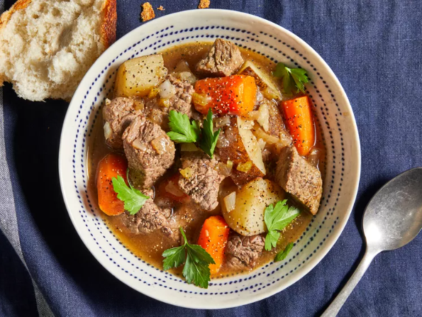

Slow Cooker Beef Stew

A bowl of beef stew
About the dish
This slow cooker beef stew is the perfect low maintenance meal for chilly
fall and winter nights.
Full of cozy flavor and hearty ingredients, this beef stew recipe will
warm you up from the inside out.
Ingredients
- 2 pounds of beef stew meat, cut into 1-inch pieces
- 1/4 cup of all-purpose flour
- 1/2 tsp of salt
- 1/2 tsp of ground black pepper
- 1 1/2 cups of beef broth
- 4 carrots, sliced
- 3 potatoes, sliced
- 1 onion, chopped
- 1 stalk of celery, chopped
- 1 tsp of Worcestershire sauce
- 1 tsp of ground paprika
- 1 clove garlic, minced
- 1 large bay leaf
Directions
- Gather your ingredients.
- Place meat in the slow cooker.
-
Mix your flour, salt, and pepper together in a small bowl. Pour over
meat, and stir until the meat is coated.
-
Add the beef broth, carrots, potatoes, onion, celery, Worcestershire
sauce, paprika, garlic, and bay leaf. Stir.
-
Cover and cook until beef in tender enough to cut with a spoon: on Low
for 8 to 12 hours, or High for 4 to 6 hours.
- Serve hot and enjoy.